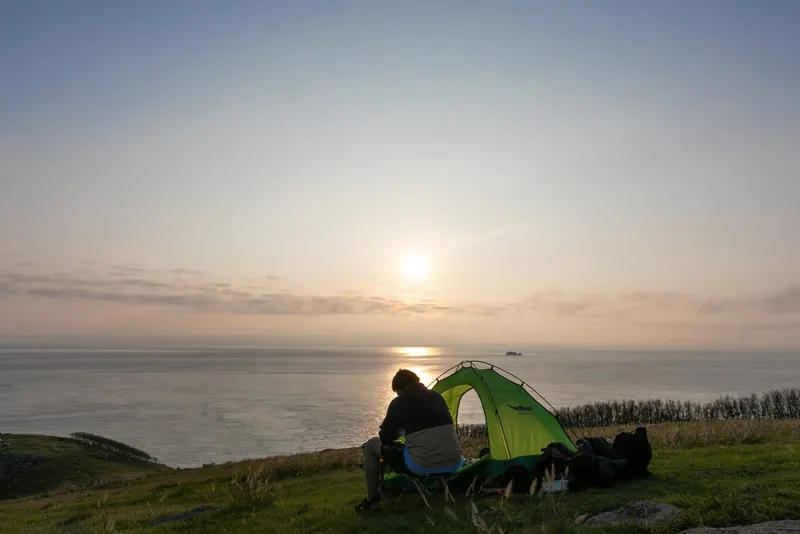

굴업도
'한국의 갈라파고스'라 불리는 백패킹 성지. 개머리언덕의 초원 위 캠핑과 별빛, 해식 지형이 어우러진 섬입니다. 수용력이 작으므로 흔적 남기지 않기 원칙을 지켜주세요.

지역옹진군 · 백령도·대청도·덕적도·연평도·장봉도
테마자연·섬 · 웰니스·힐링
주소옹진군 덕적면 굴업리
주변 관광안내소인천국제공항 관광안내소 (제2터미널) · +82-32-743-0030
길찾기Google Maps · Naver Map · 좌표 37.195, 125.995